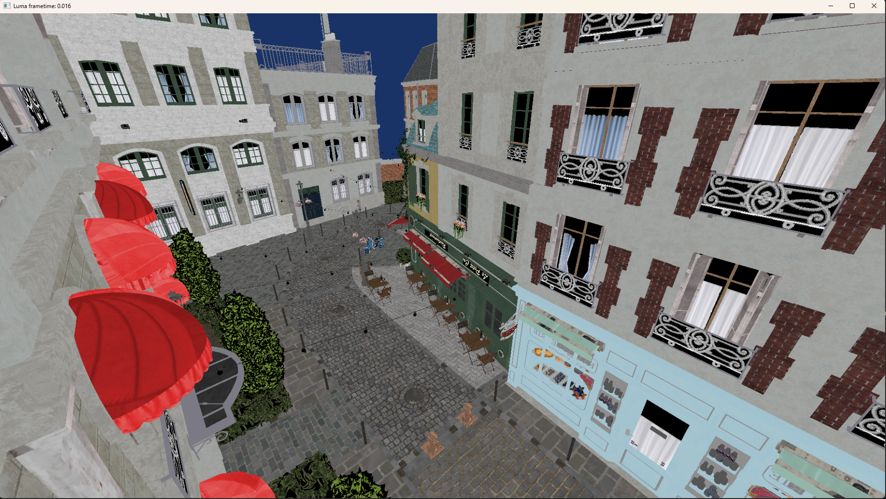
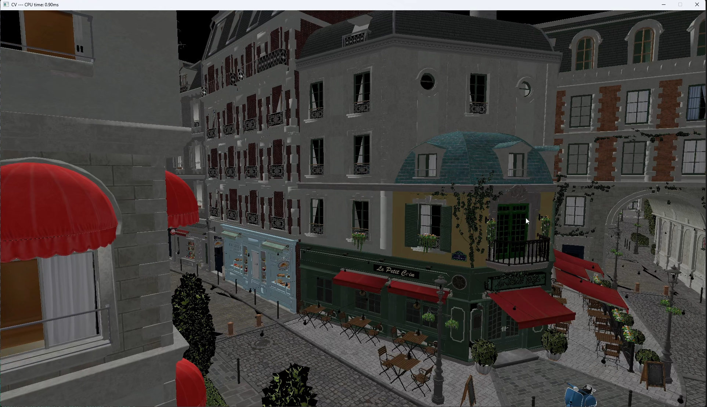
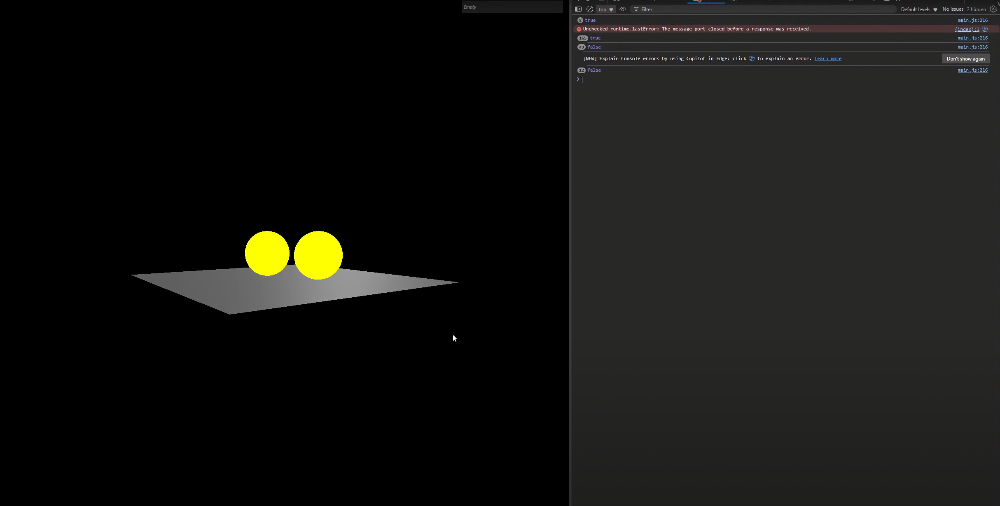
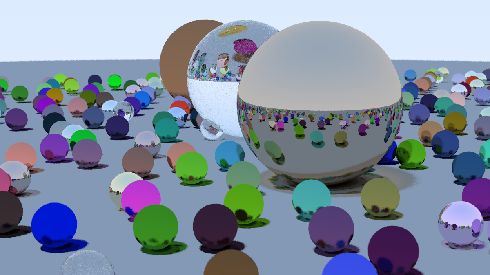

Rendering APIs
Working across the graphics stack
I've built projects in OpenGL, D3D11, Vulkan, and D3D12 to understand the tradeoffs each API exposes.
I'm Nikhil Chouhan, a BTech'25 graduate from IIT Roorkee focused on rendering, graphics programming, and GPU-oriented systems. I like building engines and tools that turn low-level graphics concepts into something tangible on screen.
I've built projects in OpenGL, D3D11, Vulkan, and D3D12 to understand the tradeoffs each API exposes.
Frame flow, synchronization, resource lifetimes, memory layout. I'm very much interested in how a renderer is structured than how it looks in a screenshot. The payoff with proper architecture is insane, they don't realise
RDNA, Ampere, occupancy, wavefronts, bandwidth. Understanding what the hardware actually does changes how you write shaders and structure pipelines.




A multithreaded ray tracer focused on fundamentals, performance awareness, and understanding light transport from the ground up.
Around 2017, I broke my Linux desktop and ended up discovering the Mesa graphics stack. I didn't fully understand the code at the time, but the userspace drivers were enough to make graphics programming feel mysterious in a good way.
Later at IIT Roorkee, I moved through Unity, Unreal Engine, and graphics communities on campus before writing my first renderer through LearnOpenGL. That was the turning point where the subject stopped feeling distant and started feeling buildable.
Since then, I've kept circling back to the same question: how do modern graphics systems actually fit together? That question keeps pulling me into APIs, engines, shaders, and GPU architecture.
OpenGL, D3D11, Vulkan, and D3D12.
Shader workflows, engine internals, and GPU-facing systems.
RDNA and Ampere microarchitecture docs. Understanding the silicon informs the code.